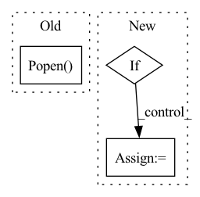

Pattern ID :6945
Before Change
def process_checkpoint(in_file):
tmp_file = in_file + ".tmp"
subprocess.Popen( ["cp", in_file, tmp_file])
sha = subprocess.check_output(["sha256sum", tmp_file]).decode()
out_file = in_file
if out_file.endswith(".pth"):
out_file = out_file[:-4]After Change
else:
torch.save(checkpoint, out_file)
if decode:
sha = subprocess.check_output(["sha256sum", out_file]).decode()
if out_file.endswith(".pth"):
out_file_name = out_file[:-4]
else:
out_file_name = out_file
final_file = out_file_name + f"-{sha[:8]}.pth"
subprocess.Popen(["mv", out_file, final_file])
In pattern: SUPERPATTERN
Frequency: 3
Non-data size: 3
Instances Fragment ID: 23279665
Project Name: westlake-ai/openbioseq
Commit Name: f678533fb9c8c5320abdd86ba57bd50d6357835f
Time: 2023-03-05
Author: 1070535169@qq.com
File Name: tools/model_converters/publish_model.py
M Class Name: AnonimousClass
N Class Name: AnonimousClass
M Method Name: process_checkpoint(3)
N Method Name: process_checkpoint(1)
M Parent Class:
N Parent Class:
M File Name: tools/model_converters/publish_model.py
N File Name: tools/model_converters/publish_model.py
M Start Line: 13
M End Line: 24
N Start Line: 24
N End Line: 45
Before Change
if not args.disable_numactl:
process = subprocess.Popen(cmd_s, env=os.environ, shell=True)
elif enable_taskset:
process = subprocess.Popen( cmd, env=os.environ)
processes.append(process)
if args.instance_idx != -1: // launches single instance, instance_idx, only
breakAfter Change
if not args.disable_taskset:
enable_taskset = True
if args.disable_numactl and args.disable_taskset:
// If numactl and taskset are both disabled, KMP_AFFINITY should be set False
// so that all the cpu resource can be used.
set_kmp_affinity = False
self.set_multi_thread_and_allocator(args.ncore_per_instance,
args.disable_iomp, Fragment ID: 23279662
Project Name: oap-project/cloudtik
Commit Name: 1bd207b9d6e2107a414081a2b6422d1442295283
Time: 2023-03-30
Author: hao.jin@intel.com
File Name: python/cloudtik/runtime/ml/runner/cpu/multi_instance_launcher.py
M Class Name: MultiInstanceLauncher
N Class Name: MultiInstanceLauncher
M Method Name: launch(1)
N Method Name: launch(1)
M Parent Class: CPULauncher
N Parent Class: CPULauncher
M File Name: python/cloudtik/runtime/ml/runner/cpu/multi_instance_launcher.py
N File Name: python/cloudtik/runtime/ml/runner/cpu/multi_instance_launcher.py
M Start Line: 20
M End Line: 212
N Start Line: 20
N End Line: 212
Before Change
def process_checkpoint(in_file):
tmp_file = in_file + ".tmp"
subprocess.Popen( ["cp", in_file, tmp_file])
sha = subprocess.check_output(["sha256sum", tmp_file]).decode()
out_file = in_file
if out_file.endswith(".pth"):
out_file = out_file[:-4]After Change
else:
torch.save(checkpoint, out_file)
if decode:
sha = subprocess.check_output(["sha256sum", out_file]).decode()
if out_file.endswith(".pth"):
out_file_name = out_file[:-4]
else:
out_file_name = out_file
final_file = out_file_name + f"-{sha[:8]}.pth"
subprocess.Popen(["mv", out_file, final_file])
Fragment ID: 23279661
Project Name: westlake-ai/openmixup
Commit Name: cb7ae3bae6ffe76f12f0c307e16325e7952f4274
Time: 2023-02-26
Author: 1070535169@qq.com
File Name: tools/model_converters/publish_model.py
M Class Name: AnonimousClass
N Class Name: AnonimousClass
M Method Name: process_checkpoint(3)
N Method Name: process_checkpoint(1)
M Parent Class:
N Parent Class:
M File Name: tools/model_converters/publish_model.py
N File Name: tools/model_converters/publish_model.py
M Start Line: 13
M End Line: 24
N Start Line: 24
N End Line: 45